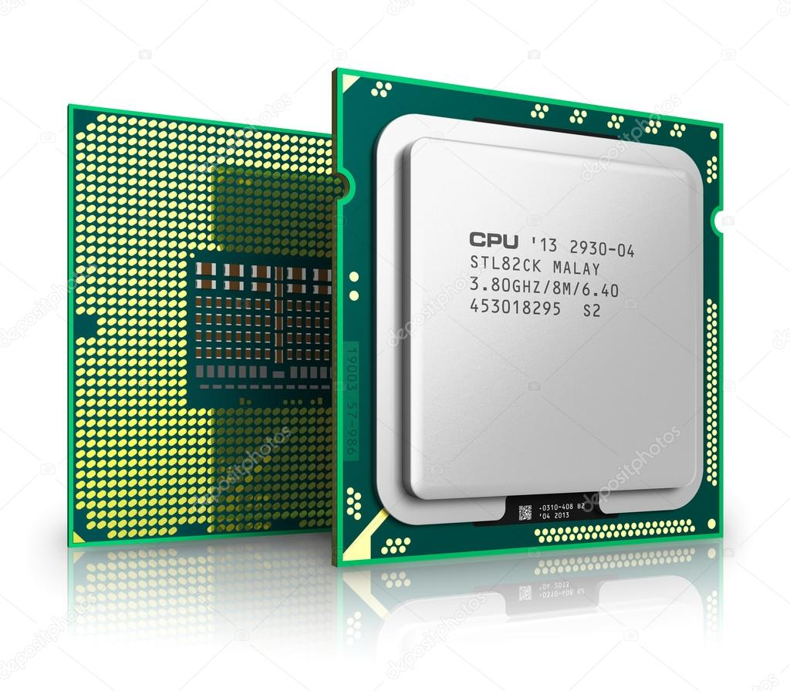
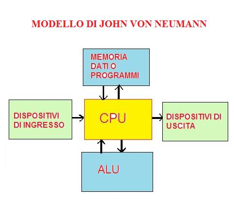
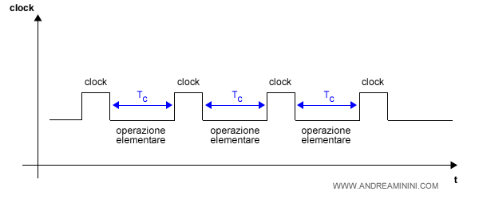

Benvenuti nella nostra ricerca sui Microprocessori
Benvenuti nella nostra pagina dedicata allo studio dei microprocessori. Qui troverete informazioni dettagliate su:
- Storia e evoluzione delle CPU
- Il fondamentale modello di Von Neumann
- Componenti principali di un microprocessore
- Funzionamento del clock e domini di clock
Argomenti in evidenza

CPU Moderne
Scopri le caratteristiche delle CPU più recenti

Modello di Von Neumann
L'architettura alla base dei computer moderni

Clock e Timing
Come funziona il timing nei processori